The Seven Modern Topspin Forehands¶
The Seven Modern Topspin Forehands¶
Brett Hobden¶
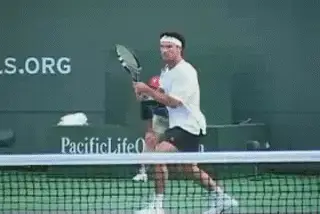
The modern forehand: [technique in the service of tactics.]
In the first article in this series, I demonstrated that there really is no such thing as THE modern forehand. We established that there are actually seven different topspin variations that pro players hit on a regular basis. link Each of these forehands is situational and hit with a specific tactical purpose. When we look at the differences in the swings, we can see that each variation is a technical response to a tactical problem.
If you understand the different topspin forehands and how to use them, you develop the ability to swing aggressively and take a full rip at all your shots--but with a purpose, generating a specific forehand with a specific tactical goal.
In this article, we'll go into the different topspin forehands in more detail. For each one, we'll look at when and why pro players use them. We'll look at the differences in the trajectories and amount of spin. Then we'll look at the different finishes players use to produce them, and see how that varies depending on the grip and other factors. We'll also compare the pro and the club variations, and see how the different topspin shots can apply in your game.
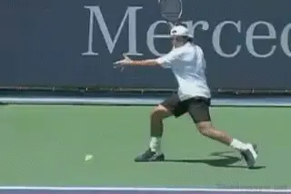
The arc actually clears the net by 3 or 4 feet.
This article will give you a great general overview of the shot types. But the relationships between swing pattern, tactics, impact height, and levels spin are quite complex. That's why in future articles we'll go into to all these factors in more detail for each of the modern forehands.
The Arc
The first topspin forehand is what we call the arc. The arc is the one of the most popular topspin forehands on the men's tour. It is hit very aggressively with a lot of ball speed and moderate topspin. It has a high safety factor because it passes 3 or 4 feet over the net, but is still hit with enough spin to ensure that the ball drops down in the court. The top pros hit it fearlessly because it's safe. They use the arc to move their opponents around the court and create openings. Although it is less common on the women's tour, we are now starting to see this ball more frequently there as well.
If you watch tennis on television, it's very difficult to see the real trajectory of the arc. This is because the high camera shot typically used in matches can make it appear that the ball is clearing the net by only a few inches. In reality the arc ball clears the net by 3 feet or more traveling from baseline to baseline.
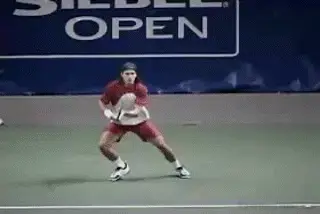
The finish on the arc differences with grip, ball height and amount of spin.
Understanding the arc ball can give you a big advantage in club tennis. The message is that when you are rallying it's not necessary to hit just a few inches over the net, even though it might appear that's what the pros are doing. Instead copy the real trajectory of the arc ball.
At the club level, the arc will be hit slightly lower and with a little less spin, but the effect is the same. You will still be able to get the ball up, reduce your errors significantly and hit aggressively with spin and depth. If you are trying to develop consistency from the ground, the arc can actually be a more reliable shot than the drive.
The finish on the arc, as with all the topspin variations, will vary with the player's grip but also with the impact height and the amount of spin on a given ball. On many balls the players will hit the arc with a conventional finish which ends with the racket going over the shoulder. This is particularly true with the moderate grips. But the finish can be more across the body, with the hand going around the shoulder or finishing lower somewhere in the mid torso.
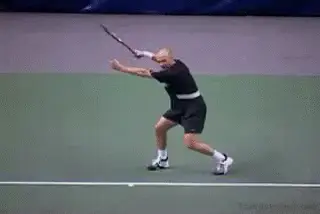
With conventional grips the finish on the drive is elevated, or over the shoulder.
The Drive
The drive is a fast, penetrating shot still hit with topspin, but with a flatter trajectory than the arc. It goes over the net much lower than the arc, typically clearing the net by about 1 foot, versus 3 or 4 feet for the arc.
The drive is quick through the air and gets from one end of the court to other very rapidly. [Because of the increased pace and lower trajectory, the opponent has less time to react than with the arc, and this makes the drive more difficult to reach.] The drive is a shot for hurting your opponent and/or finishing the point from the baseline or a few feet inside. In the women's game the drive is probably the most common of the seven forehands. This is because women tend to hit the ball a little lower and flatter in the basic rallies compared to the men who tend to hit more arcs.
[The other primary situation you see players hit the drive is on the passing shot, where it is important to keep the ball low.] When hitting the pass, depth is irrelevant if you can hit lower over the net with pace and keep the ball close to sidelines.
For players with more conventional grips the drive finish will typically be the elevated finish over the shoulder. With the more extreme grips the finish will tend to be more horizontal with the hand finishing across the body and around the shoulder rather than above it. When the ball is low in the player's strike zone, you will see the hand and racket turn over more with the finish also tending to be lower.
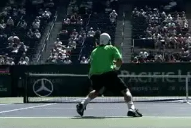
Looping shots are great for defense but can also generate short balls.
The Loop
[The loop is a more extreme variation of the arc. It's hit 2 or 3 times higher over the net than the loop, 6 feet or more.] It's also hit with heavy topspin. You commonly see players hit the loop when they are pushed back. The result is a fast, high bouncing ball, often played to the backhand from the inside out position.
When club players are pushed back, they often make the mistake of panicking and going for the outright winner. The pros go for the loop. Rafael Nadal is the classic example. When he is forced deep he will move around the ball and hit a heavy topspin forehand that bounces up very high usually to the opponent's backhand. [The loop is a great shot to get you out of trouble.] [But it can easily produce a short ball to attack on the next shot. The depth and the high bounce can actually make the loop a weapon and a way of transiting from defense to offense.]
At high levels of the game the loop ball is hit with extreme spin. However, club players who are developing this high looping ball can learn the trajectory with less spin. I call this the difference between the rolling loop and the ripping loop. As the speed of the ball increases, the amount of spin should also increase, to keep the ball on the same path.
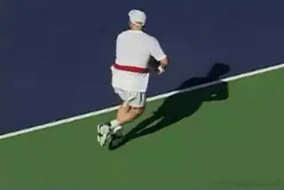
On the run, players finish the topspin lob on the right side.
TheTopspin Lob
The topspin lob is hit still higher than the loop, typically clearing the net by 12 to 16 feet. It's an offensive shot used to hit over the head of an incoming volleyer. [The topspin lob keeps the volleyer honest. If a player is closing in on top of the net and picking off volleys, an offensive lob will not only win you points outright, [it will keep the volleyer guessing and cause him to back off the net a step or two.]]
The top pro players hit this shot with very heavy topspin that drops the ball quickly after it reaches its peak. But club players can use the same shot hit at a lower velocity with less spin and be just as effective.
The finish on the topspin lob will vary depending on how rushed the player is and if he has to hit on the run. When the player has more time and the ball is higher you will tend to see an inverted finish with the racket finishing across the body. When the players are rushed and/or on the run you will see what is called a vertical finish. With the vertical finish the player hits much more radically upward and finishes the swing on the same side of his body.
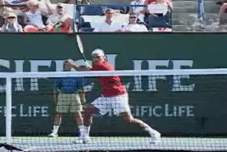
Video demonstration — the original video for this article was hosted on TennisPlayer.net.
The angle opens the court with an inverted finish.
The Angle
[The angle is hit cross court with a low trajectory and heavy spin. It clears the net with about the same height as a drive, about 1 foot.]* [But it is hit with a sharp angle, typically landing at about the sideline T]*. Because of the heavy spin the angle is a dipping ball. Players like Monica Seles and Andre Agassi pioneered this shot in the pro game. Roger Federer is also a modern day master of the angle.
The angle can be used in various situations. First, a heavy topspin angle can be used to run your opponent, by pulling him very wide. By pushing him outside of the court, the angle will open the court for the next shot. The angle also makes a great crosscourt passing shot. When you pass crosscourt you don't need to hit the deep corner. In fact you have a better chance of getting the pass by the net player going crosscourt with an angle.
Even if the volleyer gets there, the angle still makes his play difficult. The ball stays low with heavy topspin. This means the net player has to counteract the spin and still volley up. This is a very difficult shot that will produce volley errors, especially at the club level. If the volleyer does make the shot, he is still very unlikely to put the ball away. If the ball does come back chances are you will have a much easier ball to hit the passing shot.
An angle typically is hit with a lower inverted finish across the body. This is true for all the grips particularly when the impact point is low. This because you need to get the ball up and down very quickly.
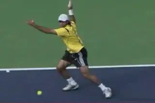
The semi-western grips have turned the dip drive into an exciting weapon.
The Dip Drive
The dip drive is one of the most exciting shots in pro tennis, and also one of my personal favorites. It's a high octane topspin shot that is hit not only on the forehand side, but more and more on the backhand as well.
The dip drive is hit off a short high ball. The player moves in and makes contact, usually around shoulder level. The ball is hit with great velocity and driven down into the court. It's an offensive shot hit with power and spin that the great players just blow by their opponents.
Years ago a high ball on the forehand was considered a very tough shot and caused even the top players problems. But with today's grips and today's swing patterns players can rip the cover off this ball. You also see the dip drive more and more on the return of serve in pro tennis. On the kick serves that used to pose a threat on the backhand side, the players move around the ball, hit the forehand dip drive and go on the offensive with the return.
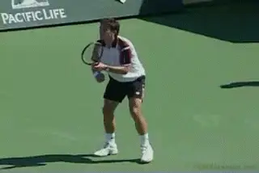
Players like Tommy Robredo move around the return and hit dip drives.
The dip drive has become a huge weapon in today's game. It is extremely comfortable for players with the extreme grips. But players with milder semi western grips or with a hybrd grip like Federer can hit it as well. Players with an eastern grip will find the dip drive difficult because of the ball height. A good solution is to let the ball drop lower into the strike zone to make a penetrating shot. The more conservative grips with finish higher on the dip drive. But a player like Roddick will finish all the way across his body and quite low on the left side.
The Bender
The bender is typically hit on the run from a low contact point. It has a low trajectory and around a foot of net clearance like the drive. [We call it the bender because it has a combination of topspin and sidespin, causing the ball to "bend" inwards (curving from right to left for a right-handed player).] It allows the player to neutralize a difficult ball but also to pressure the opponent with the reply.
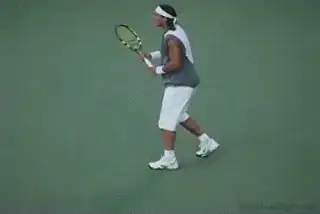
The bender can be hit with either classic or more extreme grips.
The bender was one of Pete Sampras's trademark shots. He'd dare players to hit crosscourt forehands or approach with their backhands down the line. Once they took the bait he would hit incredible running benders to both corners.
But the bender is not just for players with classical grips like Sampras. In the modern game it can be equally effective across the whole range of more extreme grips as well. The thought once was that the way to attack the players with the extreme grips was to hit the ball low and wide. But not anymore when the extreme grip players can hit the bender:
[[The bender is hit with an extreme vertical finish,] with the [racket traveling upward over the player's head and never crossing the body.]] This finish was discovered by players reacting in extreme circumstances in match play. It's a great example of how shots evolve in the modern game.
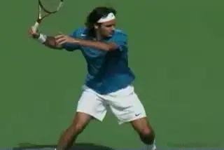
The world's best player with the most varied and complete forehand.
In today's game, the variations in the modern forehand have opened up an entirely new realm of tactical possibilities. When you try these shots, it's important to remember they have to be hit from the appropriate area of the court with the right tactical goal in mind to be successful. But the fact is that not every ball in tennis should be a drive. And that's at all levels.
When you add loops, angles, lobs all of a sudden you are building a repertoire. You are expanding the tool kit of shots you have in your game. That's how you start to play better tennis. There are many reasons why Roger Federer is the number one player in the world, but his incredible variety on his forehand is definitely one of them. It's a dimension that players at all levels should work to add to their games as well.
website dedicated to providing coaches and players with the knowledge required to teach and play modern tennis successfully. Two DVDs are now available, the first in a new series on teaching and playing the modern game. (link) Anyone wishing to contact the authors can also do so directly through their website.